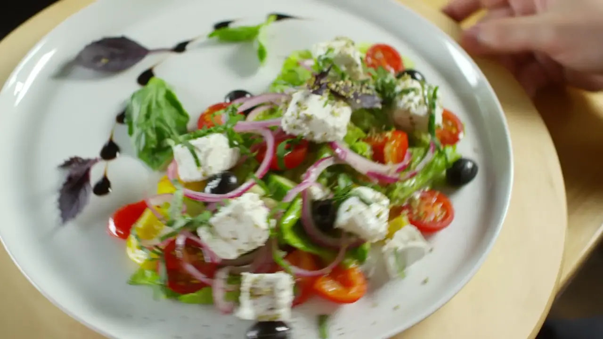
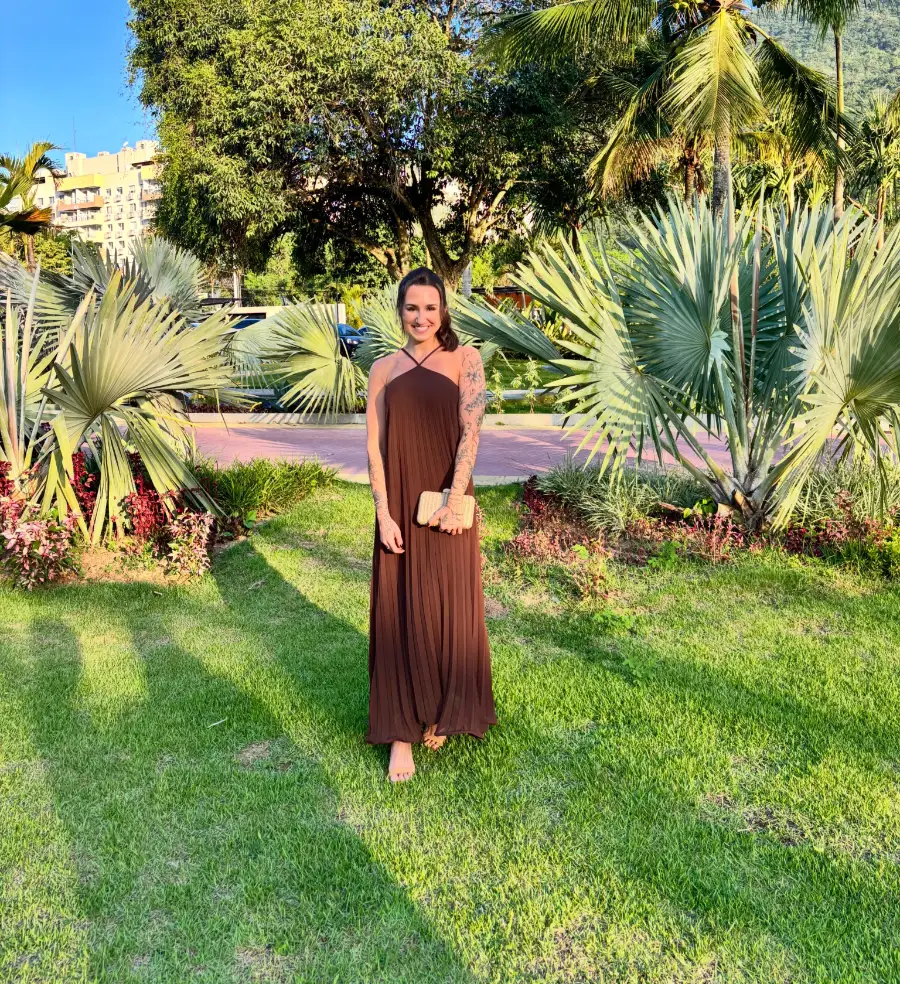
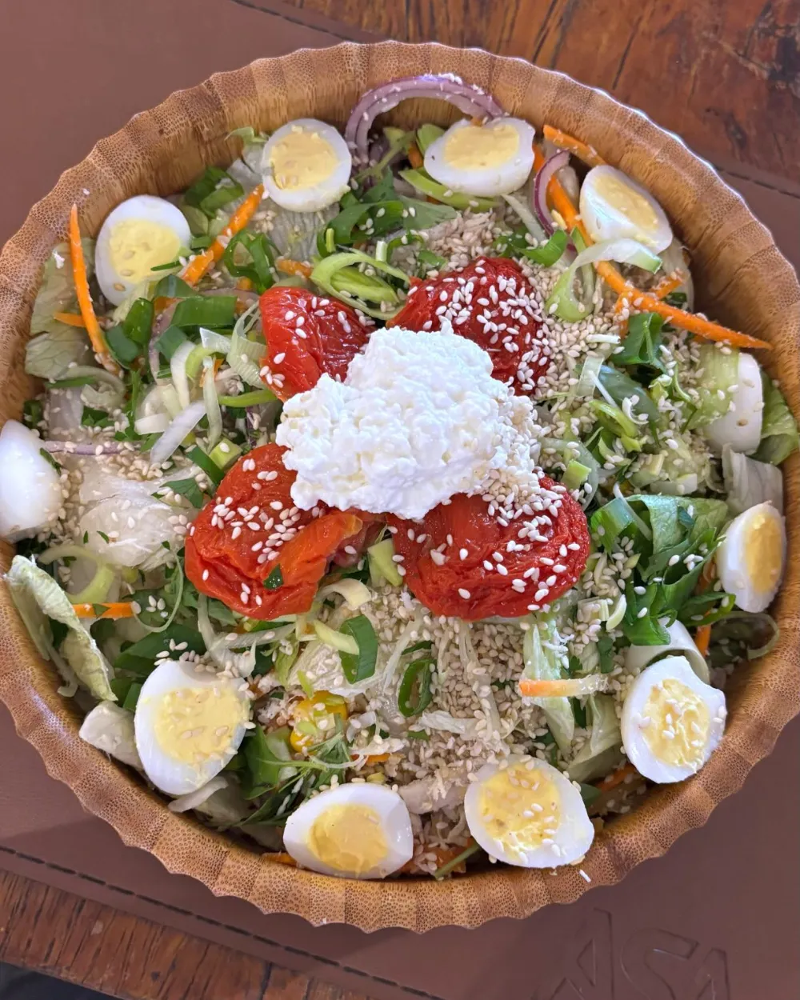

Nutrição clínica e esportiva
Nutrição real e prática
Juliana Leanza cuida da sua alimentação com acompanhamento personalizado, no consultório da Freguesia ou online.
O trabalho dela, nas palavras dela
“Transformando saúde e performance através da nutrição real e prática.”Juliana Leanza, no perfil @julianaleanza

Sobre
Quem cuida da sua alimentação
Nutricionista clínica, pós-graduada em Nutrição Esportiva, dedicada a uma saúde integrada através da alimentação.
O acompanhamento é personalizado: parte da sua rotina, do seu histórico e do que você quer alcançar, e não de uma dieta pronta.
- Formação
- Nutrição pelo IBMR (Instituto Brasileiro de Medicina e Reabilitação)
- Pós-graduação
- Nutrição Esportiva pela NutMed
- Atendimento
- Presencial na Freguesia e online
Atuação
Em que a consulta pode ajudar
Os temas que a Juliana mais trabalha no consultório e nos conteúdos que publica.
- 01
Emagrecimento sem 8 ou 80
Um plano alimentar possível de manter, sem alternar entre restrição total e desistência.
- 02
Nutrição esportiva
Energia e recuperação ajustadas ao treino, para quem sente que a alimentação não acompanha.
- 03
Durante e depois da caneta
Acompanhamento nutricional para quem usa ou usou medicação para emagrecer com prescrição médica.
- 04
Fome e relação com a comida
Entender os sinais do corpo, a fome da noite e a adesão ao plano, sem culpa.
- 05
Rotina e horários
Refeições organizadas ao longo do dia, considerando trabalho, sono e treino.

Na prática
Comida de verdade, do seu dia a dia
Nada de cardápio impossível. A proposta é comer bem com o que cabe na sua rotina e no seu bolso. Uma paciente resumiu assim na avaliação do Google: “alimentação totalmente acessível”.
Foto publicada pela Juliana em @julianaleanza
Como funciona
Do primeiro contato ao acompanhamento
Três passos simples. O agendamento é feito direto pelo WhatsApp.
- 1
Você chama no WhatsApp
Conta seu objetivo e escolhe entre atendimento presencial ou online.
- 2
Consulta
Na Freguesia ou por vídeo, a Juliana avalia sua rotina, seu histórico e suas metas.
- 3
Plano e acompanhamento
Você recebe um plano alimentar personalizado e segue com ajustes ao longo do caminho.
“Excelente profissional, impossível não avaliar com 5 estrelas.”
Avaliação publicada no Google“Obrigada pela ajuda Ju, recomendo pra todo mundo.”
Avaliação publicada no Google“Alimentação totalmente acessível.”
Avaliação publicada no Google
Onde fica
Freguesia, Jacarepaguá
Estr. dos Três Rios, 830Freguesia (Jacarepaguá)
Rio de Janeiro, RJ, 22745-005
Mora longe ou prefere consultar de casa? O atendimento online tem o mesmo acompanhamento.
Mapa do consultório na Estr. dos Três Rios, 830, Freguesia.
Dúvidas
Perguntas frequentes
Onde fica o consultório?
Na Estr. dos Três Rios, 830, Freguesia (Jacarepaguá), Rio de Janeiro, RJ.
A Juliana atende online?
Sim. O atendimento é presencial na Freguesia ou online, por vídeo, com o mesmo acompanhamento.
Como agendo uma consulta?
Pelo WhatsApp (21) 99799-8736. Você pode chamar direto ou preencher o formulário abaixo, que abre a conversa com a mensagem pronta.
Qual é a formação da Juliana?
Nutricionista clínica formada pelo IBMR (Instituto Brasileiro de Medicina e Reabilitação) e pós-graduada em Nutrição Esportiva pela NutMed.
Contato
Agende sua consulta
Preencha e a conversa abre no WhatsApp com tudo pronto. É só enviar.